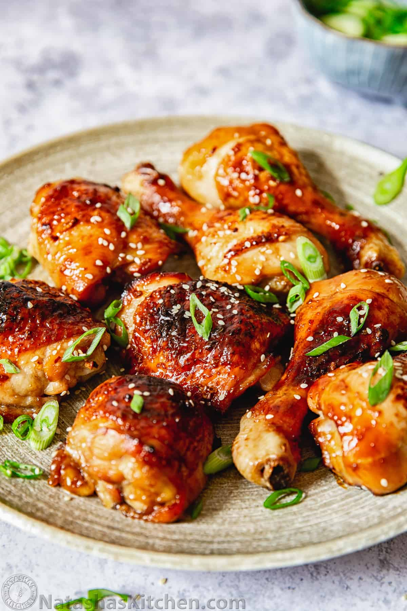

Meal Prep Chicken

Delicious Mild Korean Chicken
This simple recipe will get you prepared to power through your week.
Combing several ingrediants, approximately 40 minutes of your time, and an appetitate,
this protein packed mildly spicy meal will have you coming back for more. Simple yet
declicious for those looking to eat healthy and have flavor in their life.
Ingrediants
- Chicken breast
- Garlic Powder
- Onion Powder
- Paprika
- Sazon Goya
- Corn Flour
- Liquid Aminos
- Gochujang
- Honey
Steps
- Dice up your chicken breast and put it into a bowl.
- Combine your garlic powder, onion powder, paprika, Goya, and corn flour to your chicken.
- Grab your pan and add oil, on a medium/high heat add your seasoned chicken and cook until crispy brown
- Once a crispy brown, remove your chicken from the pan and add 40g of Gochujang, 25g Honey, and 25ml of Liquid aminos. Stir for a few minutes
- Add your chicken back into the pan to soak in the sauce you just created
- Remove from pan and add to freshly rice or a side of your liking